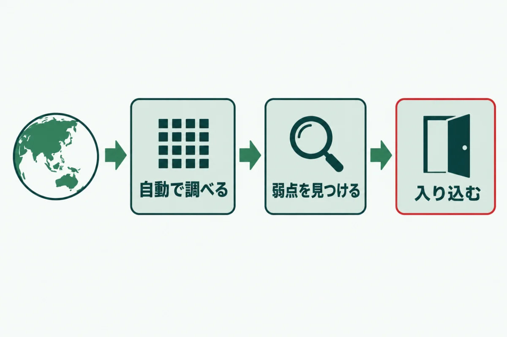
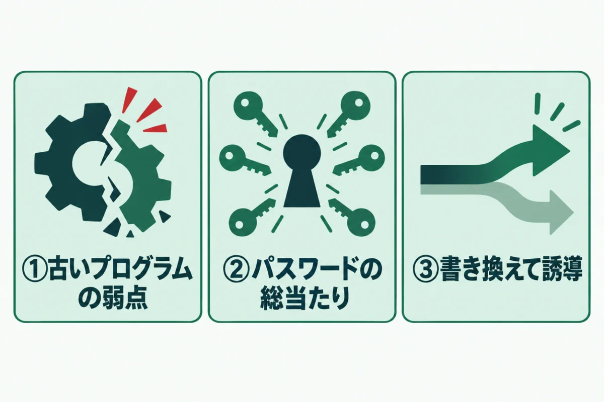
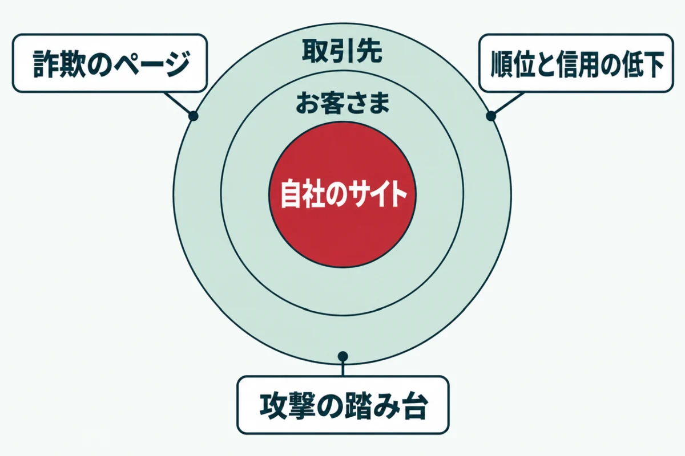
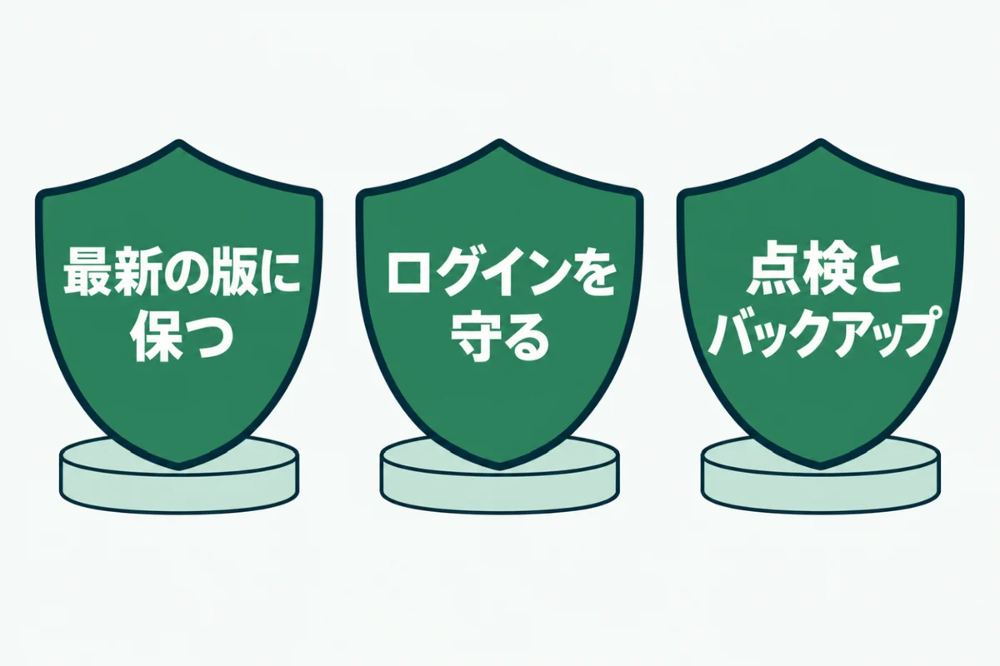

中小企業のホームページが狙われる理由

「うちのような小さな会社のホームページなんて、狙われるはずがない」と思っていませんか？
実際には、会社の大きさに関係なく、毎日たくさんのサイトに攻撃が届いています。
この記事では、中小企業のホームページが狙われる理由を、攻撃の仕組みから説明します。よくある手口と被害の例、今日から始められる備えもまとめました。
難しい専門用語はできるだけ使わずに書いているので、経営者の方にもそのまま読んでいただけます。
中小企業のホームページが狙われる理由

中小企業のホームページが狙われるのは、攻撃の多くが会社の規模ではなく弱点の有無で選ばれるからです。有名かどうかは、ほとんど関係ありません。
攻撃する側にとっては、入りやすいサイトほど都合のよい的になります。小さな会社のサイトほど更新が止まりやすく、結果として狙われやすくなるのです。理由を3つに分けて見ていきましょう。
攻撃は自動の仕組みで弱点を探している
攻撃の多くは、人が1つずつ選んで行っているわけではありません。自動の仕組みが、インターネット上のサイトを片っ端から調べています。
古いプログラムや、外から見えるログイン画面があれば、そこを入口にします。会社の名前を知らなくても攻撃は届くので、「うちは知られていないから大丈夫」は通用しません。調べる数は1日に何万件にもなります。
弱点が公表されると、すぐに攻撃が始まる
脆弱性の情報を集める Patchstack という会社が、毎年報告を出しています。それによると、よく悪用された弱点は、公表から最初の悪用まで中央値で5時間でした。2025年には、WordPressだけで11,334件の弱点が見つかっています。
弱点の情報が出ると、それを試す攻撃がすぐに世界中のサイトへ送られます。更新が数日遅れるだけでも、狙われる期間になるということです。
守りが手薄になりやすい
中小企業では、ホームページの担当者がほかの仕事と兼ねていることがほとんどです。制作会社に作ってもらったあと、何年も手を入れていないサイトも珍しくありません。
運営者は2026年10月に、自社のサイト15個を点検しました。すると、7つがサポートの終わったPHPのままでした。自分で管理していても、気づかないうちに古くなるのです。
中小企業のホームページを狙うよくある3つの手口

中小企業のホームページを狙う手口には、よく使われる型があります。手口を知っておくと、どこを守ればよいかが見えてきます。
どの手口も、特別な技術を持つ人だけが使うものではありません。道具がそろっていて、誰でも大量に試せるのが今の攻撃の特徴です。代表的な3つを紹介します。どれも、基本の対策でかなりの部分を防げるものです。
① 古いプログラムの弱点を突く
最も多いのが、WordPressの本体やプラグイン、PHPの古い版にある弱点を突く手口です。修正版が出ていても、更新していなければ弱点は残ったままです。
弱点によっては、ログインしなくてもサイトを書き換えられます。更新の遅れが、そのまま入口になると考えてください。プラグインの数が多いほど、こうした入口も増えていきます。
② ログインのパスワードを総当たりで破る
ログイン画面に、よくあるパスワードを次々に入れて試す手口です。ログイン名が外から分かると、試す回数が大きく減るため、破られやすくなります。
短いパスワードや、ほかのサービスと同じパスワードは特に危険です。ログイン名を隠し、長いパスワードにするだけで、この手口の多くは防げます。管理者が複数いる場合は、全員のパスワードを見直しましょう。
③ ページを書き換えて別のサイトへ誘導する
入り込んだあと、ページに見えないコードを埋め込む手口です。閲覧者を偽の通販サイトや詐欺のページへ自動で移動させます。
管理者がログインしているときは、何も起きないように作られていることもあります。サイトの持ち主だけが被害に気づかないまま、お客さまが被害にあう例も少なくありません。スマホから開いたときだけ移動させる、という作り方もあります。
中小企業のホームページが狙われたときの被害の例

中小企業のホームページが狙われると、被害は自社の中だけでは終わりません。お客さまや取引先にまで広がることがあります。
被害に気づくのが遅れるほど、立て直しにかかる時間と費用は増えます。どんな被害が起きるのかを知っておくと、備えの大切さが分かるでしょう。代表的な例を3つ紹介します。どれも、実際に中小企業のサイトで起きているものです。
詐欺のページに使われる
書き換えられたサイトは、偽の通販サイトや詐欺のページへの入口に使われます。サイトの中に、知らないうちに大量のページが作られることもあります。
お客さまが被害にあえば、会社の名前で問い合わせや苦情が届くでしょう。自社が加害の側に見られてしまうのが、この被害の怖いところです。気づいた時点で、すぐに専門家へ相談してください。
検索の順位と信用が落ちる
改ざんされたサイトは、検索結果に警告が付くことがあります。「このサイトはハッキングされている可能性があります」という表示です。ブラウザが警告の画面を出す場合もあるでしょう。
警告が出ると、検索からの訪問は大きく減ります。直したあとも、信用と順位が戻るまで時間がかかることが少なくありません。検索からの問い合わせが多い会社ほど、売り上げへの影響も大きくなります。
取引先への攻撃の踏み台になる
IPA（情報処理推進機構）は、毎年「情報セキュリティ10大脅威」を発表しています。2026年版では、組織の2位に「サプライチェーンや委託先を狙った攻撃」が入りました。取引のある小さな会社を足がかりに、大きな会社を狙う攻撃です。
警察庁によると、2026年上半期のランサムウェアの被害は123件で、そのうち約6割が中小企業でした。小さな会社だから狙われないという考えは、数字の上でも当てはまりません。
中小企業のホームページを守るために今日からできる備え

中小企業のホームページを守るのに、大がかりな仕組みは必要ありません。攻撃が探している弱点を残さないことが、いちばんの備えになります。
自動の攻撃は、入りやすいサイトを探しています。基本の守りを固めておけば、ほかのサイトへ移っていくのです。今日から始められる3つの備えを紹介します。費用をかけずに始められるものばかりです。
本体・プラグイン・PHPを最新に保つ
WordPressの本体とプラグイン、サーバーのPHPを、どれも最新の版に保ちます。月に1回など日を決めて、更新を確かめる習慣をつけましょう。
使っていないプラグインやテーマは、停止ではなく削除まで済ませてください。古いものが1つ残るだけで入口になるため、数を減らすことも大切な守りです。更新の前には、バックアップを取っておきましょう。
ログインを守る
ログインのパスワードは長く、ほかのサービスと使い回さないものにします。管理者のアカウントは必要な人の分だけにして、辞めた人や外注先のものは消しておきましょう。
ログイン名が外から見えないようにする設定も効果があります。ログインの失敗が続いたら止める仕組みを入れると、総当たりの手口をさらに防げます。サーバー会社の管理画面で、国外からのログインを止められる場合もあるでしょう。
定期的な点検とバックアップを続ける
どれだけ気をつけても、弱点がゼロになることはありません。だからこそ、月に1回は外から点検し、異変に早く気づけるようにします。
バックアップも、サーバーの自動のものに加えて、ときどきサーバーの外にも控えを取ると安心です。サイトドックの無料簡易診断なら、URLを入れるだけで外から見える弱点を確かめられます。
URLを入れるだけで、WordPressやPHPの版、ログイン名など7項目を無料で判定します。登録はいりません。
無料で診断する中小企業のホームページが狙われることに関するよくある質問
アクセスの少ないホームページでも狙われますか？
狙われます。攻撃の多くは自動の仕組みで行われ、アクセスの多さではなく弱点の有無でサイトが選ばれるからです。むしろ、アクセスの少ないサイトほど更新が止まりやすく、弱点が残りがちです。持ち主が気づきにくいため、長い間悪用され続けることもあります。見る人が少ないサイトほど、定期的に点検することが大切です。
WordPressを使っているから狙われるのですか？
WordPressは世界中で使われているため、攻撃の道具もそろっていて、狙われやすいのは事実です。ただし、WordPress自体が危ないわけではありません。本体とプラグイン、PHPを最新に保ち、ログインを守れば、十分に安全に使えます。ほかの仕組みで作ったサイトでも、更新を怠れば同じように狙われます。大切なのは、使っている仕組みに合った手入れを続けることです。
狙われているかどうかは、どうすれば分かりますか？
サーバーの記録を見ると、ログインの試行や不審なアクセスが分かることがあります。ただし、記録を読むには専門の知識が必要です。持ち主にできるのは、検索でサイト名を調べる方法です。知らないページが出ていないかを見てください。管理画面に見覚えのない管理者がいないかも確かめましょう。外から見える弱点は、無料の点検でも確かめられます。
保険に入っていれば、対策はいりませんか？
保険は、被害が出たあとの費用を補うものです。攻撃を防いでくれるわけではありません。改ざんされれば、お客さまや取引先に迷惑がかかり、信用は保険では戻りません。また、補われる範囲は契約によって違うため、何が対象かを確かめておく必要があります。保険と対策は、どちらか一方ではなく両方そろえて考えてください。
何から始めればいいか分からないときはどうすればいいですか？
まずは、今のホームページの状態を知ることから始めましょう。サイトドックの無料簡易診断なら、URLを入れるだけで、PHPなどの版を外から判定します。結果を見て、急ぐべきものから順に直していけば十分です。自社で直すのが難しい場合は、制作会社や専門家に結果を見せて相談すると、話が早く進みます。点検の結果を印刷して渡すだけでも、何を頼めばよいかが伝わりやすくなるでしょう。
まとめ
中小企業のホームページが狙われるのは、攻撃が会社の規模ではなく、弱点の有無で自動的に選ばれるからです。古いプログラムやログインの弱さが、そのまま入口になります。
狙われると、詐欺のページに使われたり、取引先への攻撃の踏み台にされたりします。本体とプラグイン、PHPを最新に保ち、ログインを守り、点検とバックアップを続けましょう。
まずは今日、自社のホームページの今の状態を確かめるところから始めてください。
狙われる前に、弱点をふさぐ。
URLを入れるだけで、数十秒で判定が出ます。登録はいりません。